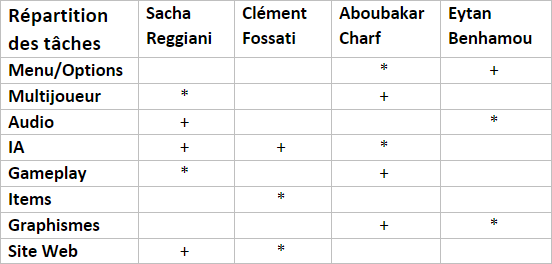

Date de Sortie : 6 juin 2022
Bomberman est le premier jeu de Ceas développé par :
Sacha Reggiani
Clément Fossati
Aboubakar Charf
Eytan Benhamou


Répartition des tâches :
Pour nous répartir équitablement le travail, nous avons séparé le projet en plusieurs grandes parties que nous
avons attribué à chacun selon nos points forts :

Légende :
* : Responsable
+ : Aide directe
Bien sûr certaines taches seront plus difficiles que d'autres donc nous nous aideront mutuellement pour pouvoir
les accomplir efficacement et dans les temps.